Дмитрий Корепанов
dealer1@chat.ru
Анимация сегодня приобретает все большую популярность в различных областях. Интернет, обучающие программы, игры, презентации - вот далеко не полный перечень ее применений. Ну и, конечно, не следует забывать обычные анимационные фильмы, которые традиционно занимают заметное положение в индустрии развлечений и весьма доходны.
Широкое распространение недорогих средств создания анимации (таких, как редактор Macromedia Flash, и некоторых других), с одной стороны, и экспоненциальное развитие Интернета, - с другой, привели к резкому увеличению числа разработчиков, использующих анимацию в своих проектах.
Примеры флэш-анимации можно наблюдать на бесчисленном множестве сайтов. В эту категорию попадают и флэш-интро (анимированные и озвученные заставки), и флэш-открытки по любому поводу и к любому празднику, и просто отдельные анимационные фильмы, и даже целые сериалы, созданные профессиональными и самодеятельными художниками-аниматорами. Для создания большинства из них требуется от нескольких часов до нескольких дней, что вполне по силам большинству разработчиков. Если вы собираетесь заняться разработкой анимированных открыток для Интернета или несложных онлайновых игрушек, если перед вами встала задача создать анимацию для мультимедийного CD-ROM, то этот материал для вас. Причем основная цель статьи - показать некоторые практические приемы, которые помогут вам быстро создавать компактные анимации на Flash.
Анимация и технология Flash
Сразу отметим, что если речь идет об Интернете, то слова "анимация" и "Flash" становятся чуть ли не синонимами, - тут альтернатив Flash пока не видно. Да, в Сети немало роликов в форматах компрессированного видео, и часто это единственная возможность выставить материалы такого рода в Интернете. Но когда нужно создавать содержимое для целенаправленного использования в Сети, большинство аниматоров переходят на Flash. Причины очевидны - размеры файлов, трафик. Аккуратно сделанный флэш-фильм, даже включающий звук, отличается завидной компактностью по сравнению, скажем, с роликом в формате AVI. Есть и такое преимущества, как масштабируемость - флэш-фильм можно сравнительно безболезненно растягивать, и физический размер векторных объектов на экране никак не будет связан с размерами файла. Все градиентные заливки сохранят свое качество. Наконец, принципиальное преимущество - легкость добавления интерактивности. Иногда нелегко понять, что перед вами: флэш-мультфильм или простенькая игрушка. Нельзя не отметить и сравнительно легкую интеграцию Flash со звуком.
Теперь для лучшего понимания материала посмотрим на сам предмет разговора несколько со стороны. Что такое анимация вообще?
Анимация, если коротко, - это оживление неживых объектов. Технологий анимации на сегодня существует великое множество; наиболее известны из них следующие:
- классическая анимация;
- лимитированная анимация;
- анимация перекладкой;
- анимация на пластилине;
- трехмерная анимация.
Это крайне условная классификация. Аниматоры постоянно пытаются экспериментировать и часто создают новые, неизвестные ранее способы или, еще чаще, просто соединяют несколько различных технологий.
Любая анимация состоит из последовательности кадров, которые формируются одним из вышеописанных способов. Применение компьютеров позволяет автоматизировать некоторые операции, хотя ручной работы в любом виде анимации всегда остается довольно много. На сегодня есть несколько пакетов профессионального уровня, автоматизирующих процесс создания анимации на студиях, но эти пакеты чаще всего весьма близко копируют обычный ручной конвейер. Это означает, что в цепочке производства принимают участие как минимум несколько человек, иногда больше десятка. Мы не будем здесь обсуждать эти процессы; для нас важно, что технология Flash ориентирована на небольшие группы разработчиков или на отдельных разработчиков, выполняющих все этапы проекта на одном рабочем месте.
В рисованной анимации существует такое понятие, как фазовка. Качество промышленных анимационных пакетов определяется во многом возможностью автоматической фазовки. Эта проблема до сих пор полностью не решена. Есть различные способы - варианты морфинга, построение векторных 2D-и 3D-моделей; довольно распространен способ создания трехмерной анимации с просчетом ее в стиле рисованной анимации. Для этой цели разрабатываются фильтры к трехмерным пакетам. Фазовка - это чисто техническая задача, не требующая никакого творческого подхода, и экономия на ней - это первейший способ снизить затраты для любого анимационного проекта.
Flash-технология частично решает проблему автоматической фазовки при помощи анимации формы и анимации движения, и этого обычно достаточно для большинства разработчиков. Во всяком случае, вам предоставляется выбор - рисовать все фазы движения вручную или передать часть работы редактору Flash. В большинстве проектов не требуется качества традиционной классической анимации. Флэш-мультфильмы обычно находятся ближе к классу лимитированной анимации (примерами анимации этого вида могут служить многочисленные сериалы или анимация персонажей MTV). Ее применение обычно обусловлено стремлением сократить сроки разработки и затраты. Кроме того, в проектах для Сети немаловажен и объем файла, а каждая фаза пусть по капле, но добавляет к его размерам. Перед разработчиком-одиночкой или небольшой группой разработчиков стоит та же проблема - необходимо максимально сокращать сроки разработки и затраты. Большинству заказчиков вполне достаточно лимитированной анимации.
Если вы научитесь эффективно использовать инструментарий редактора Flash, вы без особого напряжения сможете решать большинство поставленных перед вами задач. С другой стороны, если вы располагаете временем и финансовыми возможностями, вы можете делать с помощью технологии Flash настоящую классическую анимацию (по крайней мере, небольшие фрагменты). Технология предоставляет для этого достаточно возможностей. И, что немаловажно, вы всегда сможете без особых трудностей продемонстрировать плоды своего труда всей потенциальной аудитории через Интернет.
Особенности рисования в редакторе Flash
Надо сказать, что редактор Flash имеет свои неповторимые особенности и весьма неплохо приспособлен именно для рисования векторных изображений. Подобные инструменты встречаются лишь в редакторах анимации профессионального уровня. Модули для рисования сплайнов присутствуют во многих популярных программах обработки графики. В некоторых пакетах (например, Adobe Photoshop) они служат для вспомогательных операций. Однако немногие пакеты могут похвастаться удобными средствами редактирования векторных изображений. Причина проста - за внешней легкостью работы с инструментами рисования кривых скрывается довольно мощная математика. Разработка алгоритмов этого уровня требует существенных затрат и осознания реализации именно таких алгоритмов. По-видимому, широкое распространение технологии Flash вполне оправдывает эти затраты. А поскольку Flash - прежде всего векторный редактор (что диктуется требованием максимальной компактности графики), то разработчики постарались учесть прошлый опыт и сделали вполне ощутимые шаги вперед. Flash-редактор имеет хорошие средства работы со сплайновыми кривыми.
В чем же особенности рисования в редакторе Flash? Когда вы рисуете во Flash, это похоже на рисование в растровом редакторе. Однако картинка, которая нарисована средствами редактора Flash, всегда векторная. Вы можете использовать карандаш или кисть, рисовать с помощью прямых линий или явно выстраивать сплайновые цепочки инструментом Перо и редактированием узлов. В итоге вы все равно получаете кривую (замкнутую или нет), состоящую из отдельных сплайнов. Сплайн - это распространенное название кривых Безье второго и третьего порядка. Для построения одной такой кривой требуется задать всего четыре точки или два вектора. Для имеющих опыт работы с редакторами векторной графики внешняя сторона построения сплайнов не составляет тайны. Большинство операций в CorelDRAW - это создание сплайнов. Отличие Flash состоит в той легкости, с какой можно резать эти сплайны в любом месте кривой, добавлять сегменты, создавая новые замкнутые области. Все эти изменения требуют гораздо меньше переключений кнопок, чем в других векторных редакторах.
Набор средств рисования может показаться искушенному компьютерному дизайнеру или художнику бедноватым, но он вполне функционален. И любой художник моментально чувствует всю мощь средств рисования Flash. Приобретя определенную сноровку, выучив "быстрые клавиши" и освоившись с полюбившимися инструментами, вы сможете рисовать значительно быстрее, чем в любом другом редакторе векторной графики. Одну и ту же фигуру можно нарисовать, используя инструменты Карандаш, Кисть, Линия, Окружность, Прямоугольник плюс инструмент Стрелка (Selection). Это действительно очень просто. Нужно сначала нарисовать фигуру, по форме и габаритам приближающуюся к желаемой, а далее, переключившись на инструмент Стрелка, изменять форму фигуры, подтягивая кривые в нужных местах, разрезая их (та же Стрелка) и соединяя новые концы кривых. Универсальный инструмент Стрелка при этом работает и как средство редактирования, и как средство генерации новой информации (т.е. вы можете не просто менять форму имеющихся кривых - вы можете создавать этим инструментом новые сегменты кривых, не обращаясь к другим инструментам). Если в результате ваших действий где-то образовалось излишнее пересечение кривых или форма кривой стала слишком изломанной, можно просто вырезать этот сегмент (выделив его и нажав Del) и подредактировать получившиеся прямые.
Здесь мы сознательно не даем подробного описания инструментов рисования и их параметров. Вы можете поэкспериментировать с ними самостоятельно либо найти данную информацию в литературе. Основные настройки каждого инструмента доступны в окне инструментов в нижней части окна. Обратите внимание на режимы инструмента Ластик: он позволяет стирать элементы либо без ограничений, либо строго избирательно (прямые линии, заливки, выделенные фрагменты) - весьма полезное качество.
Импорт сканированной графики
Если вы сильны в традиционном рисовании или просто предпочитаете сначала пофантазировать на бумаге, то вы потом можете трассировать сканированное с бумаги или кальки изображение. Это неплохой способ рисования. Но если вы будете использовать встроенный трассировщик Flash, то помните - ваши контуры будут содержать много избыточной информации, что увеличит объем файла в 3-4 раза, а то и больше. Любое дрожание линии при рисовании вручную может преобразоваться в дополнительные мелкие элементы кривой, которые в большинстве случаев не нужны (иногда, впрочем, требуется специально создать дрожание линии). Для использования в Сети лучше трассировать вручную. Поверьте, когда вам придется делать анимированную Интернет-открытку со звуком или небольшую игрушку для Сети, то ни один байт не покажется лишним. Для оффлайновых же применений это не так актуально.
Трассировка вручную - это не слишком долго, если ваши рисунки достаточно лаконичны, но, безусловно, дольше по сравнению с автоматической трассировкой. Однако выигрыш в размерах файла будет достойной наградой.
Сканировать лучше в режиме Line Art или Grayscale при разрешении не более 300 dpi. Потом сохраните вашу картинку в любом формате, доступном для импорта во Flash-редактор (можно посмотреть выпадающий список форматов в окне выбора файла для импорта). Если вы сохраните несколько картинок с нумерованными именами (im001, im002 … im003 и т.п.), это будет распознано как последовательность и может по вашему желанию импортироваться в последовательность фреймов. Линии должны быть достаточно четкими и непрерывными: это влияет на формирование замкнутых контуров. А залить вы сможете только замкнутый контур.
Предположим, вы решили трассировать картинку вручную и уже импортировали один или несколько кадров в вашу сцену (или клип). Нужно обвести все контуры картинки векторами. Но не торопитесь делать это в том же слое, где находится картинка. Если вы попытаетесь так сделать, то ничего не увидите. На самом деле все рисуется, но остается под картинкой. Если вы отодвинете ее, то увидите все, что нарисовали. Чтобы линии были видны поверх картинки, лучше создать новый слой. Рекомендуется также заблокировать нижний слой с картинкой (это делается установкой "замочка" в свойствах слоя). Установите еще какой-нибудь контрастный цвет для рисования контурных линий. Потом вы в любой момент сможете изменить цвет контура или вообще убрать его.
Рисовать лучше в контуре. Рисование анимации всегда начинается с контура. Используйте инструмент Line или Pencil. Многие находят, что Pencil быстрее при рисовании. Инструмент Line позволяет точно контролировать число создаваемых кривых.
Когда один кадр вашего будущего фильма нарисован, переходите к следующему. Если вы импортировали последовательность картинок, то нужное количество кадров должно было создаться автоматически, и вам достаточно просто перейти к нужному кадру, нажав на соответствующий фрейм в окне Time Line. Если вы хотите создать новый пустой ключевой кадр, достаточно нажать F5 (создание нового фрейма) и F7. Если вы нажмете F6, то в новом кадре будет создана копия предыдущего фрейма. Эту копию вы можете изменить в соответствии со своими замыслами, не рисуя объект с нуля. Чаще всего так и следует поступать. Однако если вы трассируете очередную сканированную картинку или рисуете новый ключевой фрейм, который сильно отличается от предыдущего, то создавайте пустой фрейм нажатием F7.
То, что вы нарисуете таким образом, называется ключевыми фазами. В анимационном кино это еще называют компоновками. В принципе для лимитированной анимации часто бывает достаточно ключевых кадров с соответствующими паузами. Но часто возникает желание сделать движение более плавным. Если классическая анимация требует стандартно 12 кадров в секунду и выше (12 кадров обычно достаточно для передачи большинства движений, если фазы правильно нарисованы), то лимитированная анимация подразумевает 8 кадров в секунду и менее. Следовательно, в большинстве случаев, кроме ключевых фреймов, придется рисовать еще и промежуточные фазы. Эта работа не очень интересна и требует изрядного терпения. Создатели редактора Flash постарались максимально облегчить создание промежуточных фаз. Мы не будем касаться тонкостей расчета движения (тайминг - это основа основ в анимации) и рассмотрим простейший случай, когда нужно нарисовать несколько промежуточных фаз между двумя компоновками (ключевыми фреймами).
Установите указатель на первый из двух ключевых фреймов и нажмите F5. Между двумя ключевыми фреймами возникнет пустой фрейм. Создайте в этом фрейме пустой ключевой фрейм нажатием F7. Однако как рисовать промежуточную фазу, не видя двух других? Что же, поищите в нижней части TimeLine (временной линейки) кнопку с меткой Onion Skin Outlines. При нажатии на эту кнопку редактор перейдет в режим отображения нескольких соседних фреймов. Это аналогично наложенным одна на другую нескольким калькам в традиционной рисованной анимации. Вы можете сделать так, чтобы одновременно было видно очень много фреймов. Но для нормальной работы достаточно видеть по одному (иногда по два, очень редко по три) фрейму впереди и столько же сзади. Количество видимых фреймов регулируется маленькими шариками по обеим сторонам курсора в TimeLine. Любой, кто работал в Word, быстро поймет, о чем идет речь. Это похоже на регуляторы ширины печатного поля в Word.
Установите курсор на пустой ключевой фрейм и перемещением шариков добейтесь, чтобы были видимы соседние фреймы. Теперь можно рисовать новую фазу. Для этого нужно просто проводить новые контуры между линиями из соседних фреймов. Если вы успешно справляетесь с этой несложной операцией, считайте, что у вас есть задатки художника-фазовщика. Нарисовав фазу полностью, можно повторить вышеописанные действия - создать новый фрейм между вновь нарисованным и следующим (или предыдущим) и рисовать следующую фазу. Это максимально близкая имитация традиционной технологии. Каждый кадр вам придется рисовать вручную. В ряде случаев задачу можно облегчить. Если какой-либо объект должен появляться или исчезать, то можно создать полный вид объекта, сделать копию фрейма и каждый раз отрезать по кусочку. Это позволит не перерисовывать объект каждый раз заново и заодно обеспечит идеально неподвижный контур. Обычно дрожание контура - это дефект (если оно не делается специально), от которого стремятся избавиться. Таким способом можно нарисовать убывающую (растущую) Луну.
Описанный способ создания анимации весьма трудоемок, как и весь процесс традиционной анимации. Но если вы собираетесь заниматься анимацией всерьез, то вам придется использовать этот способ в своих работах постоянно. Зачастую это лучшая возможность создать хорошо проработанное и впечатляющее движение в кадре.
Однако Flash предлагает и другие способы, облегчающие жизнь художника-аниматора. Рассмотрим их подробно.
Анимация движения
Это весьма простой способ создания многих эффектов и движений. Большинство дизайнеров флэш-страниц вполне обходятся только этим видом анимации. Суть его такова: вы создаете объект (например, рисуете что-то и делаете этот рисунок объектом при помощи клавиши F8) или берете объект из библиотеки. После этого через несколько фреймов делаете новый ключевой кадр с этим же объектом (F5 и затем F6). Через вкладку Frame выбираете Motion Tweening из списка для первого ключевого фрейма. Между ключевыми фреймами должна появиться сплошная стрелка на лилово-голубом фоне. Это произойдет лишь при условии, что в текущем слое есть только один объект (для фигур, не превращенных в объекты, этот вид анимации не работает). Теперь вы можете сдвинуть объект в ключевых фреймах, повернуть его (наклонить), изменить ширину и высоту, прозрачность, цветовой оттенок. Все эти действия можно выполнять по отдельности или вместе. Движение происходит по прямой. Это годится для создания появляющихся надписей и логотипов, имитации вращения вокруг оси Y (изменением линейного размера по X). Легко создаются переливающиеся блоки текста (предварительно преобразованные в объекты). Изменяя параметр Easing на вкладке Frame, можно регулировать ускорение или замедление движения.
Если нужно двигаться по кривой линии, вам придется либо делать для каждого положения ключевой фрейм, либо выбрать анимацию по траектории. Для задания траектории просто вызовите правой кнопкой на слое с объектом контекстное меню и выберите пункт Add Motion Guide. Слой с объектом при этом сдвинется слегка вправо. Нарисуйте в слое Guide любую кривую (она может пересекать сама себя), по которой будет двигаться объект. Затем установите объект в ключевых фреймах на концы кривой, ориентируясь при этом на центры объекта. Поставьте центр объекта как можно ближе к кривой. Или же заблокируйте слой с траекторией, возьмите объект за центр и подведите к концу кривой. Появится кружок - это означает, что объект захвачен траекторией. Теперь отпустите его. Этих действий должно быть достаточно, чтобы объект привязался к траектории. Так нужно сделать по крайней мере в двух ключевых фреймах.
Этим способом можно реализовать движение карандаша при выведении надписи или выполнение самолетом фигуры высшего пилотажа. Ручная расстановка ключевых фаз потребовала бы гораздо больше времени и сил.
Вы можете на вкладке Frame отметить опцию Orient to Path (она доступна при выделенном объекте). В результате объект будет двигаться с сохранением направления угла поворота относительно кривой.
Все вышеописанное характерно для простых движений. Но можно ли сделать с анимацией более сложные движения, например, характерную (персонажную) анимацию? Ответ однозначен - да!
Конечно, ограничения на изменения формы объекта при анимации движения дадут о себе знать довольно быстро, но зато такая анимация будет крайне компактна. Ведь прототипом служит по сути один и тот же объект.
Рассмотрим для примера анимацию автомобиля из мультика. Эта анимация была использована при разработке флэш-баннера для страховой компании, предлагающей услуги по страхованию автотранспорта. На размеры баннера налагаются довольно жесткие ограничения, поэтому за небольшим исключением использовалась только анимация движения. Это позволило создать небольшой мультфильм с простым сюжетом объемом размером в пределах 22 Кбайт. По сюжету в нашей анимации будет четыре автомобиля. Первый - большой и солидный, представительского класса. У него очень плавный ход и очень простое движение. Он лишь иногда притормаживает и вновь ускоряется, что выражается в движении взад-вперед с определенной периодичностью.
Гораздо более разнообразно движение двух автомобилей поменьше. Они созданы на основе одного кузова, меняется лишь цвет. Этим задаются два разных характера и различные последовательности движений. Именно здесь больше всего используется анимация движения.
Четвертый объект - большой грузовой автомобиль типа КамАЗа, который периодически обгоняет всю кавалькаду и на кузове которого меняется текст рекламного послания. Этот автомобиль должен производить впечатление массивности и устойчивости, поэтому его движение также весьма просто. Он лишь проходит из одного края ролика в другой, исчезает, появляется справа уже с другим текстом, и все это повторяется в цикле с четырьмя разными текстами. Движение на фоне при этом идет в своей временной последовательности и никак не связано с движением грузовика. Это достигается за счет программного управления анимацией с использованием генератора случайных чисел. Общий фон создан сочетанием прямоугольников и окружностей разных цветов, что имитирует убегающую назад дорогу и лес с деревьями и кустами. Это считанные байты.
Давайте посмотрим, как создается сложное "поведенческое" движение маленьких автомобилей за счет только анимации движения.
У одного из автомобилей - задиристый характер. Он постоянно пытается обогнать большой представительский автомобиль, но у него не хватает на это силенок, и он откатывается на исходные позиции. В нетерпении дрожит, набирается сил и вновь делает попытку. Цикл замыкается.
| 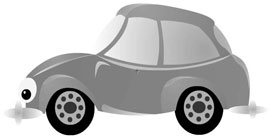 | Общий вид автомобиля.
|
 |
Первый этап движения (ключевые фреймы с промежуточными фазами).
|
На первом этапе движения наш автомобиль циклически колеблется вниз-вверх, что неплохо передает его нетерпение и скрытую энергию. Движение создано при помощи всего трех ключевых фреймов. Поскольку движение достаточно быстрое, то между каждыми ключевыми фазами достаточно одной промежуточной. Количество циклов колебаний определяется генератором случайных чисел в третьем ключевом фрейме. С вероятностью девять десятых происходит переход на начало цикла колебаний, но в одном случае из десяти выполняется переход на второй этап движения. Такие вероятности обычно подбираются для каждого конкретного случая, в зависимости от сюжета.
На втором этапе автомобиль делает подготовку к рывку. В жизни этот этап был бы почти незаметен. Но мы создаем небольшой мультфильм, а по законам анимации такая подготовка крайне желательна. В классической анимации подготовка иногда заменяет само движение: делается подготовка к движению, зритель понимает, что сейчас что-то произойдет, а далее рисуется уже результат без промежуточных фаз. Это отлично подходит для быстрых и энергичных движений. У нас схожий случай. Автомобиль делает подготовку к рывку и затем быстро идет на обгон. Если сделать движение без подготовки, то оно будет плохо читаемым и не произведет должного впечатления.
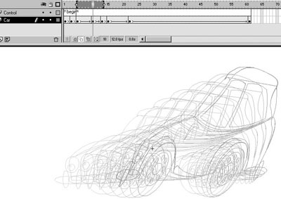
Конечное положение для этого этапа движения создается путем искажения размеров объекта и сдвига (операция Skew - это разновидность поворота). В конечном положении автомобиль замирает в статике на несколько фреймов для фиксации движения. Держать паузу - это очень важно! Паузы и их длительность не менее важны, чем само движение.
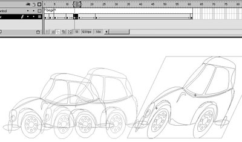
Затем идет сам рывок. Здесь всего три фазы. Но есть один важный момент: параметр Easing установлен равным +100. Это создает замедление к концу движения. Ясно видно, что расстояние между первой и второй фазами больше, чем между второй и третьей.
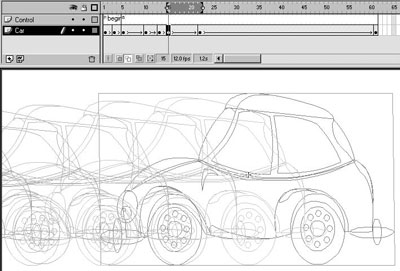
Дальше автомобиль просто равномерно движется вперед и постепенно немного уменьшается по высоте.
На последнем этапе движения происходит возвращение на исходные позиции. Это самый длинный этап (но не по времени). Циклическое движение первого этапа может занимать даже больше времени, ведь это случайная величина.
Поведение второго автомобиля тоже достаточно интересно, но чтобы не повторяться, мы не будем рассматривать его так же подробно. Рисунки скажут вам достаточно.
У второго автомобиля совсем другой характер. От первого он внешне отличается по большей части цветом кузова (был просто изменен оттенок свойством Tint) и фарами-глазами. Он спокойно (даже слегка сонно) двигается позади солидного большого автомобиля, что подчеркивается медленными циклическими колебаниями. Автомобильчик как бы "дышит". Но поскольку большой автомобиль периодически слегка притормаживает (причина несущественна), то идущему следом приходится просыпаться, в испуге отшатываться назад и даже вставать дыбом на передние колеса, чтобы затормозить и не врезаться. Наконец, он тормозит, встает на все четыре колеса и постепенно успокаивается. Цикл завершается.
| "Большой и солидный", а за ним "Сонный"
|
Ниже приводятся основные этапы движения. Изучив движение первого автомобиля, вы сможете разобраться с ними самостоятельно.
| 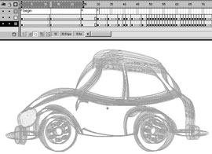 | 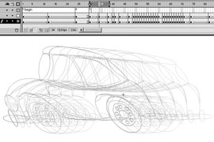 |
| Этап циклических колебаний "полусонного" автомобиля.
|
Этап подготовки к движению - он проснулся и смотрит, что происходит.
|
| 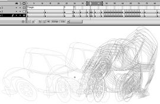 | 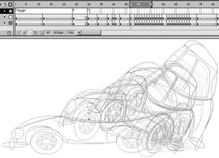 |
| Отшатывается и пытается затормозить, встает на задние колеса.
|
Падает на все четыре колеса, по инерции сжимаясь по высоте и несколько вытягиваясь в длину.
|
| 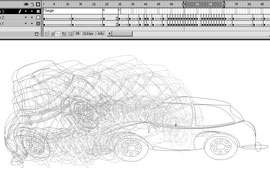 | 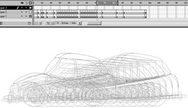 |
| По инерции встает на передние колеса и пытается гасить инерцию, при этом весь дрожит. Наконец, падает назад на все колеса. При падении сжимается по высоте и растягивается в длину.
|
Возвращение на исходные позиции. Торможение закончено, и дальше можно ехать спокойно.
|
Все описанные выше трансформации создают весьма сложное поведение, но благодаря анимации движения размеры файла остаются небольшими. Эти примеры показывают, что с помощью анимации движения можно делать действительно довольно сложную "характерную" анимацию. Однако для этого вам желательно изучить хотя бы основные положения классической анимации.
Прелесть описанного подхода в том, что вам не придется рисовать каждую фазу отдельно, достаточно изменять несколько параметров одного объекта. Описанный выше баннер был сделан всего за один день. При этом больше всего времени было затрачено не на техническую работу по отрисовке фаз (очертания объектов не менялись), а на правильную расстановку фаз во времени для создания достоверного движения (тайминг). Кстати, при анимации движения для изменения темпа достаточно добавлять или удалять промежуточные фреймы, а свойства объектов можно и не менять.
Анимация формы
Эта техника довольно сильно отличается от описанной выше анимации движения. Вообще, прежде чем приступать к анимации формы, подумайте: возможно, вам будет достаточно анимации движения.
Если анимация движения работает с объектами-клипами, то для анимации формы нужны объекты, не являющиеся клипами. Надо сказать, что анимация формы довольно капризна. Вам постоянно придется следить за тем, правильно ли выполняется деформация фигуры между ключевыми фреймами.
Но давайте по порядку. Создание анимации формы следует начать с создания ключевых фреймов с нарисованными в них фигурами. Затем из списка на вкладке Frame выберите для Tweening режим Shape. Между ключевыми фреймами должна появиться линия со стрелкой на светло-зеленом фоне. Если в каком-то из фреймов фигура отсутствует или программа по каким-то причинам не может сделать анимацию формы, линия будет изображаться пунктиром.
Для определенности рассмотрим анимацию формы на конкретном примере. Предположим, нужно изобразить Деда Мороза для новогодней открытки. Мы рассмотрим только анимацию головы. Для некоторых элементов без анимации формы обойтись довольно трудно.
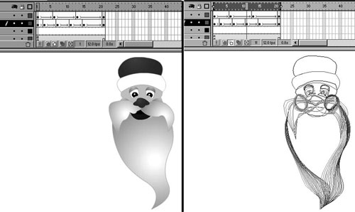
На рисунке видно, что у персонажа двигаются борода, усы, щеки. Эти вторичные движения сопровождают шевеление губ у говорящего человека. Движения рта анимируются отдельно, и здесь их не видно, поскольку рот сделан как отдельный объект.
Совершенно ясно, что никакой анимацией движения не добиться плавного шевеления конца бороды и усов так, чтобы это выглядело естественно. Для этого нужна именно анимация формы. Но тут надо помнить о некоторых нюансах.
Не стремитесь слишком увеличивать разницу между двумя ключевыми фазами. То есть продолжительность вашей анимации может быть сколь угодно большой, на любое число фреймов, и это очень полезно при анимации медленных движений, но если фигуры в ключевых фазах чересчур сильно различаются, анимация формы будет получаться с совершенно нежелательными искажениями. Это связано с алгоритмами реализации, и тут вы бессильны. Есть несколько способов избежать такого эффекта.
Способ первый: сделайте несколько промежуточных фаз вручную, чтобы разница между соседними фазами была меньше.
Способ второй: используйте точки подсказки (hints). Они добавляются через меню или сочетанием клавиш Ctrl+Shift+H. Правильно установленная на линию точка подсказки меняет свой цвет с красного на желтый или зеленый, в зависимости от того, в каком фрейме она находится - начальном или конечном. Рекомендуется устанавливать точки подсказки в характерных местах - углах, пересечениях линий. Эти точки довольно капризны. В каждом ключевом фрейме допустимо не более 26 точек подсказки (они нумеруются буквами латинского алфавита). Буквы появляются по алфавиту и должны обязательно следовать друг за другом по часовой стрелке. Ниже приведен пример с двумя точками подсказки.
| 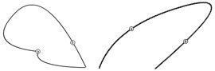 | 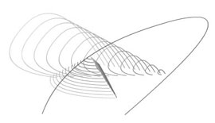 |
| Правильное расположение точек.
|
Промежуточные фазы с неправильным положением точек (они переставлены местами).
|
| 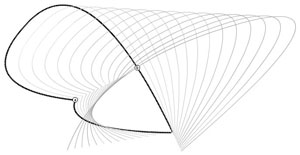 | Фазы при правильной установке точек.
|
Надо заметить, что в начальной и конечной фазе кривая состоит из разного числа сплайнов (3 и 2). Flash легко обрабатывает такую ситуацию. Но это означает, что принцип трансформации формы во Flash ближе к морфингу, чем к простому переходу сплайнов из одного положения в другое, что реализуется в некоторых других пакетах. Действительно, при простой трансформации сплайна из одного положения в другое точки подсказки не нужны, но такой подход был бы менее гибок.
Дополнительные рекомендации:
- разбивайте фигуры на более простые части и размещайте в разных слоях. Чем проще фигура и меньше в ней кривых, тем легче она анимируется;
- если нет настоятельной необходимости в контурах - удаляйте их. Хотя контуры вроде бы и не должны сбивать анимацию формы (контур на самом деле присутствует в фигуре всегда, просто он может быть в невидимом состоянии), но иногда проявляется некорректное преобразование контура при внешне нормальном преобразовании заливки.
Рекомендации к организации сцены
Для того, чтобы сохранить свое время и нервы, для любого флэш-проекта нужно правильно организовать сцену и выработать полезные привычки. Создание анимации не является исключением.
Flash - это глубоко объектно-ориентированная система. Многие, к сожалению, просто не понимают всей мощи, заложенной в этой метафоре. Но именно объектно-ориентированная среда редактора Flash позволяет создавать компактные анимации и легко управляться с отдельными клипами в сцене.
Возможность многократного вложения клипов друг в друга позволяет реализовать совершенно замечательные эффекты. Этим следует пользоваться.
Главный принцип - нужно разделять объект анимации на отдельные части. Самое простое - разделение по слоям. Если вы хотите использовать возможности анимации движения или анимации формы, вам без этого просто не обойтись. Можно, конечно, рисовать все в одном слое, но тогда вам придется рисовать каждый кадр полностью, даже те элементы, которые остаются неподвижными. Кроме колоссальной лишней работы, это приводит еще и к росту размеров файла за счет дублирования информации.
При разделении по слоям вы без проблем сможете использовать совместно анимацию форм и анимацию движения. Без разбивки по слоям вам скорее всего вообще не удастся использовать возможности автоматизации Flash для создания сколько-нибудь сложной анимации.
Не ленитесь указывать названия слоев в соответствии с их содержимым ("нога", "голова", "крышка" и т.п.). То же относится и именам клипов.
Если у вас есть элементы, которые можно использовать многократно, превращайте их в объекты. Один и тот же кружок можно использовать для зрачка глаза и для колеса, иногда даже для изображения кустов в фоне. Достаточно менять размеры и оттенок цвета. Этот принцип дает громадный выигрыш в размерах файла с ростом сложности объектов.
Не стоит рисовать анимацию прямо в сцене, хотя это возможно. Старайтесь, чтобы в сцене были только объекты. Это упрощает редактирование. Объект проще переместить при установке композиции или изменить его размеры. У многих возникают сложности с синхронизацией различных движений между собой. Если вы не умеете или не любите программировать, то можете просто устанавливать темп движений, добавляя и удаляя промежуточные фреймы, и двигать ключевые фреймы с объектами вдоль по TimeLine. Однако лучше все же освоить несколько команд Action Script и иметь возможность в нужный момент включать различные кусочки анимации на воспроизведение. Ниже мы рассмотрим вопросы программного управления анимацией более подробно.
Программное управление анимацией
Здесь мы не станем рассматривать все нюансы работы с командами Action Script. Давайте посмотрим, как реализовать синхронизацию отдельных частей объекта, если его части имеют собственные анимационные последовательности. Эта методика - лишь одна из многих. Анимацию можно делать одним большим блоком и сосредоточивать в одной сцене или клипе, а можно делать несколько последовательных сцен. Возможны и другие подходы.
Предлагаемый подход подразумевает размещение всех анимированных объектов в своих клипах. Достаточно иметь одну сцену продолжительностью в один фрейм или, при наличии загрузчика, цикл загрузчика из двух-трех фреймов и один фрейм с содержимым сцены. Один фрейм - это минимум. Вы можете делать столько фреймов, сколько захотите, но при этом нужно придерживаться принципа - в сцене должны быть только объекты, а сложную анимацию нужно помещать в отдельные клипы.
Поскольку клипы имеют разную длительность, то основная проблема состоит в том, как обеспечить начало воспроизведения нужного клипа в нужное время и как остановить его в нужном месте или сделать вообще невидимым. Это обеспечивается не слишком большим набором команд Action Script. Для овладения описываемой методикой вам достаточно понять принципы адресации во Flash и научиться пользоваться несколькими операторами: go to(label), stop, play.
Оператор go to недаром приведен здесь с аргументом, подразумевающим использование метки фрейма. Это наиболее правильный подход. Переход по номеру фрейма следует использовать только в ограниченных случаях, когда это действительно необходимо. Таких ситуаций немного. Переходы по метке хороши еще и тем, что вы можете выработать свой, понятный и удобный вам синтаксис, следуя которому вам проще будет разбираться в коде.
Здесь подтверждается один из принципов программирования - программа на языке высокого уровня порождает собственное пространство имен и символов, свой неповторимый язык. Приведем пример: вы создаете некоторую анимационную последовательность. Объект должен иметь устойчивые состояния, когда он виден и когда он невидим. Если вы сделаете на соответствующих фреймах метки hide или show, то будет довольно просто понять, что произойдет при переходе на ту или иную метку. Вы можете придумать свои термины ко всем фрагментам анимации и, адресуясь к той или иной метке, включать соответствующее движение. Это и будет лексика создаваемого вами нового языка управления объектами.
Чтобы было легче представить себе организацию клипа при указанной методике, приведем конкретный пример - создание флэш-игрушки "Боксер". Вам необходимо сделать анимацию боксера-противника. У этого персонажа есть несколько движений - реакции на ваши удары и собственные удары. В процессе игры в зависимости от ситуации будут включаться определенные цепочки анимации.
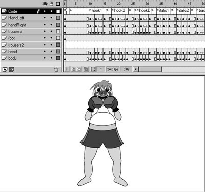
На рисунке видна структура клипа с персонажем. Каждое движение реализовано как последовательность фреймов. В самом начале клипа находится положение персонажа, обозначенное default. К этому движению привязаны все остальные, и после завершения большинства движений выполняется переход именно на эту цепочку. Самый верхний слой содержит код управления; в нем сосредоточены все операторы перехода. На рисунке видно, что в начале каждого фрагмента есть ключевой фрейм с меткой - названием движения. В конце каждого движения ставится ключевой фрейм с оператором перехода на фрейм с меткой default, если движение не циклическое, или на начало цепочки, если движение циклическое (боксер может, к примеру, раскачиваться из стороны в сторону или прыгать). Зацикленные цепочки - это пример типичных устойчивых состояний, в которых клип может находиться неопределенно долгое время, пока не будет дана другая команда.
Для того, чтобы к меткам можно было обращаться из внешнего клипа или сцены, объект должен иметь имя.
Если вы поместили объект в сцену и дали ему имя Boxer, то для включения того или иного движения из самой сцены нужно задать приблизительно следующую последовательность операторов:
tellTarget ("boxer/head/mouth/tonque") {
gotoAndPlay ("showTonque");
}
|
В результате клоун-боксер покажет вам язык.
Здесь идет прямая адресация к вложенному объекту четвертого уровня. Голова клоуна (клип с именем head) находится в клипе boxer, рот находится в клипе head, язык находится в клипе mouth.
В ряде случаев удобнее управление из вложенных клипов. Пример: вам нужно, чтобы при движении рта голова соответствующим образом деформировалась. Но голова и рот у вас сделаны в разных клипах. Более того, клип, где находится рот, вложен в клип с головой. Вы можете сделать так, чтобы при начале движения рта выполнялся следующий вызов:
tellTarget ("../") {
gotoAndPlay ("italic01");
}
|
Это приводит к началу движения клипа верхнего уровня head под управлением вложенного клипа mouth.
Вы можете давать команду на запуск сразу нескольким клипам с разным уровнем вложенности. Перестановкой всего нескольких движений можно сформировать довольно много таких сочетаний.
Программное управление анимацией позволяет создавать некую вариативность поведения персонажа. Иными словами, вы можете предусмотреть несколько вариантов движения, которое будет происходить после вызывающего их движения. Вариант выбирается в зависимости от условия или случайным образом. Это очень полезно, если вы создаете игрушки.
Описанная методика удобна тем, что позволяет легко добавлять новые движения персонажа, не меняя структуру сцены.
* * *
Мы рассмотрели основные подходы в создании анимации с помощью технологии Flash. Многое, конечно, осталось за кадром. Но если данная статья позволит вам делать анимацию более быстро и эффективно, то можно считать, что основная цель достигнута. Каждый настоящий аниматор при использовании любой технологии начинает формировать свой арсенал приемов, индивидуальный только для него. "Не важно, как это сделано, - главное, чтобы это хорошо выглядело". Пускай же сделанное вами выглядит хорошо!